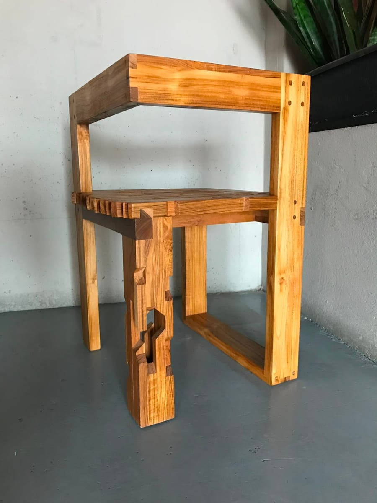
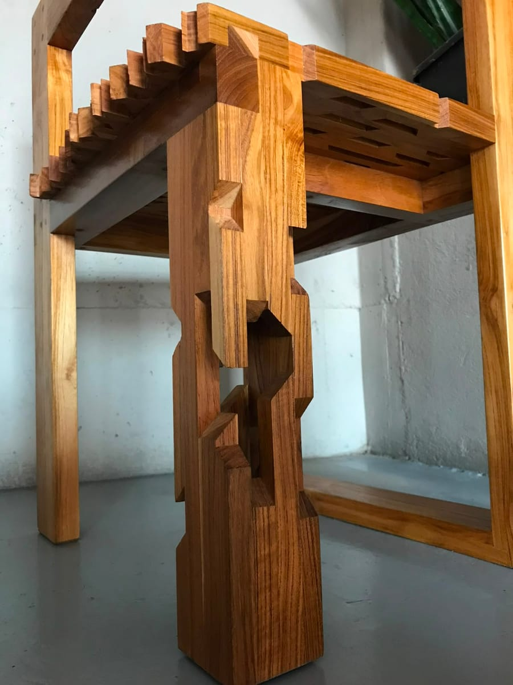
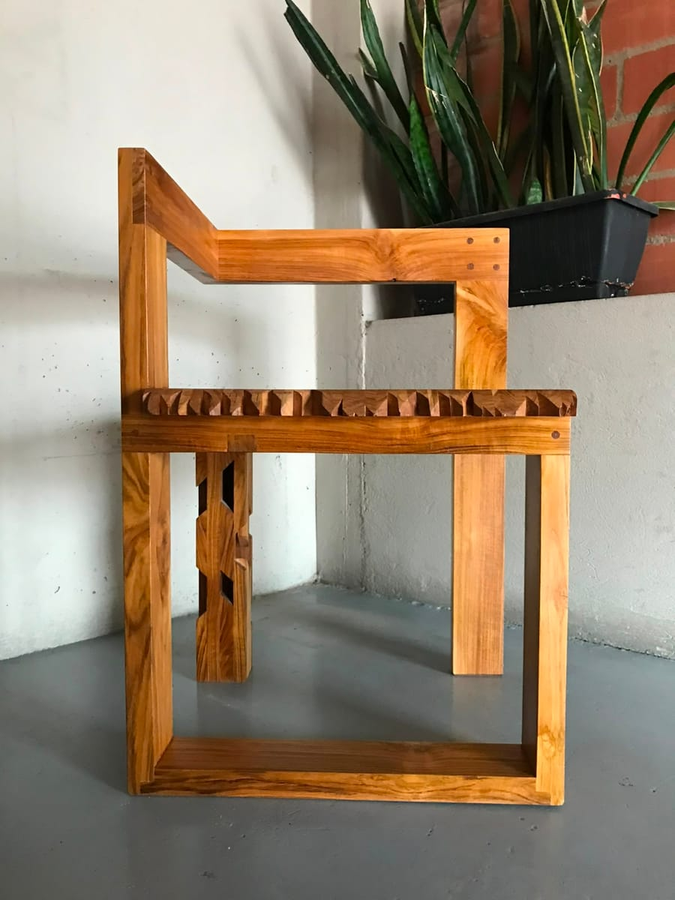
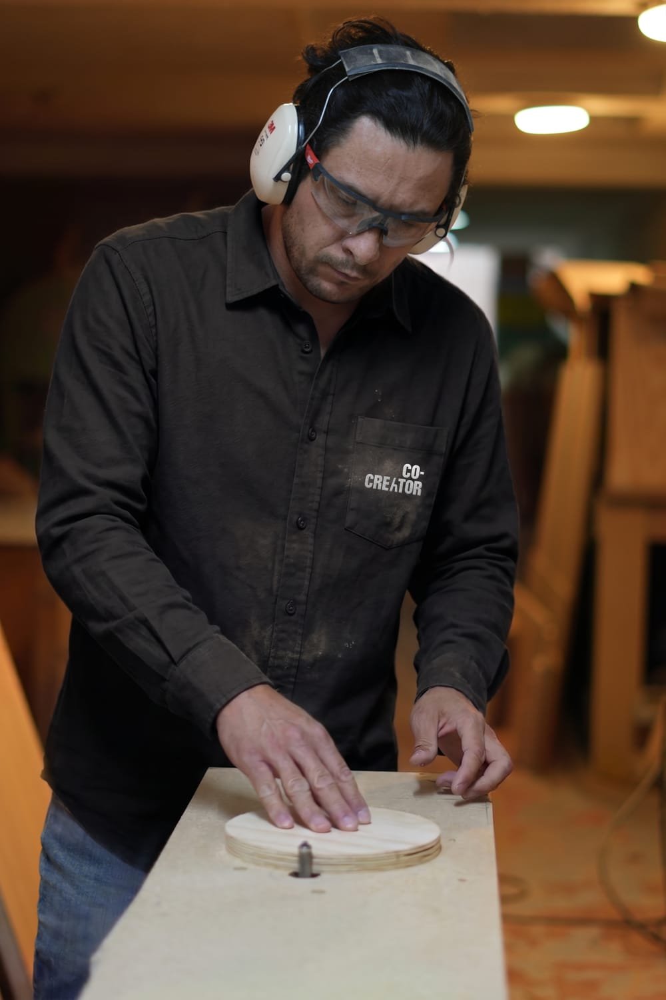

De carpintería a marca de muebles de autor: cómo lo hicimos con Co-Creator
Muchos maestros carpinteros trabajan increíble y aun así compiten solo por precio. La salida no es fabricar más barato, es convertir el oficio en una marca: piezas con nombre, series con concepto y una forma clara de que te encuentren y te compren. Esto es lo que hicimos con Co-Creator, y lo que puedes aplicar en tu taller.

La diferencia entre una carpintería y una marca de autor
Una carpintería vive de pedidos: alguien llega con una medida, una foto de Pinterest y un presupuesto, y el taller lo fabrica. Funciona, pero tiene un techo claro. El cliente decide el diseño, compara tu precio con el de otros talleres y, cuando el mueble está entregado, nadie recuerda quién lo hizo.
Una marca de muebles de autor invierte la lógica: el creador decide qué pieza nace, la nombra, cuenta su historia y la pone a disposición de quien la quiera. El cliente ya no compra "una mesa de comedor", compra esa pieza, de ese autor.
En Gessler Studio acompañamos este cambio con Co-Creator, el estudio de mobiliario de autor de Iván Ramírez, maestro carpintero en Bogotá. Este artículo resume lo que construimos y lo que puedes aplicar en tu propio taller. Una aclaración honesta: Co-Creator está arrancando su primera serie, así que aquí te contamos el sistema y las decisiones, no cifras de ventas.




Cambio 1: deja de esperar pedidos y empieza a crear piezas
El cambio más importante no es visual, es de modelo. Co-Creator se definió como un estudio construido alrededor del oficio, el criterio y la libertad creativa de su autor. No es una fábrica, ni un catálogo de producción masiva, ni un taller que responde a pedidos de diseño.
Iván decide la forma, la proporción, la combinación de materiales, la técnica, el acabado, la calidad final y el nombre de cada pieza. El sistema alrededor (identidad, contenido, web) existe para que esas piezas se entiendan, se encuentren y se puedan adquirir, no para limitar la creatividad.
Para tu taller: elige qué parte de tu producción será "de autor". Aunque sigas haciendo trabajos por encargo, separa con claridad las piezas que nacen de tu criterio, porque esas serán tu marca.
Cambio 2: organiza tu trabajo en series con un concepto
Una pieza suelta es un objeto bonito. Varias piezas conectadas por una idea son una trayectoria. Co-Creator trabaja por series de seis meses, y cada nivel tiene una función:
| Nivel | Qué es | Para qué sirve |
|---|---|---|
| Serie | Un ciclo creativo de seis meses con su propio universo. | Marca el ritmo de creación y de lanzamiento. |
| Concepto | El lenguaje de la serie: materiales, colores, texturas, formas e intención. | Construye un universo compartido. |
| Pieza | Objeto específico, único o de edición corta. | Es lo que la persona conoce y compra. |
| Archivo | El conjunto permanente de series y piezas creadas. | Construye la historia de la marca. |
La clave es que el concepto conecta las piezas sin volverlas iguales. Una pieza puede tomar solo algunas características del concepto y otra combinar muchas. Buscamos que los muebles se sientan parte del mismo universo, no que sean copias.
Cuando una serie termina, no se borra: las piezas anteriores permanecen documentadas en el archivo y, si siguen disponibles, pueden continuar en venta. La serie es temporal; la pieza es parte del archivo.
Cambio 3: cada pieza con nombre propio y hoja de vida
En una carpintería, el mueble es "el escritorio del señor Pérez". En una marca de autor, cada pieza tiene nombre, por ejemplo Mueble Mariposa, y una hoja de vida física y digital que la acompaña:
- Identidad: nombre, autor, concepto y registro.
- Historia: el relato de la pieza y su relación con el concepto.
- Material: madera, otros materiales, acabado y componentes.
- Fabricación: mes y año, y datos relevantes.
- Intervenciones: mantenimiento, restauración y futuras actualizaciones.
Con esto, la venta deja de ser el final. La pieza nace, se define, se documenta, se presenta, se vende, se conserva y, con los años, puede transferirse o heredarse. Ese recorrido es justo lo que justifica que alguien pague por una pieza en lugar de por "un mueble".
Cambio 4: una identidad visual que se sienta como el taller
La identidad de Co-Creator sale del oficio, no de una tendencia. Estas fueron las decisiones:
- Un símbolo con sentido: la silla está integrada como la letra "A" de CREATOR. Representa el vínculo con la carpintería y la ebanistería, y el objeto que acompaña la vida cotidiana.
- Una paleta corta: negro, blanco y un marrón madera (#8B5A34). Tres colores bastan para que la fotografía de las piezas sea la protagonista.
- Tipografías con carácter: Placard MT Bold para el logotipo y Futura como apoyo en documentos y comunicación.
- Aplicaciones que usan la materia: el logo se integra en una base de madera con corte CNC y una pieza de acrílico encajada, además de gorra, indumentaria de taller y señalización exterior.
- Valores que guían todo: materia, oficio, a mano e historia.
Para tu taller: tu identidad no necesita ser compleja. Necesita decir quién eres, verse igual en todos lados y usar tus propios materiales como lenguaje. Si quieres profundizar, mira nuestro servicio de branding e identidad de marca.
Cambio 5: canales con una función clara
Muchos talleres publican fotos sin estrategia. Co-Creator asignó una función distinta a cada canal, y el recorrido de una pieza va de uno a otro:
- Instagram, para descubrir. Reels cortos de detalles, materiales, manos y avances. La reacción buscada: "quiero saber más".
- YouTube, para entender. Episodios más largos sobre la creación, las decisiones, los problemas y el resultado. La reacción: "ahora entiendo cómo nació".
- Web, para conocer y comprar. Portafolio, archivo y una página por pieza con historia, medidas, materiales, disponibilidad y contacto.
- WhatsApp o correo, para cerrar. La conversación, el pago y la entrega los coordina el maestro o el responsable.
La web participa en la venta: no es un simple portafolio. Tampoco tiene que ser un e-commerce tradicional, porque puede cerrar la venta por contacto directo. Si estás pensando en tu propio sitio, te servirá nuestra guía para crear una página web.
Cambio 6: un precio que se pueda explicar
Una marca de autor no compite por ser la más barata, pero tampoco tiene que ser inaccesible. Co-Creator construye el precio de cada pieza desde su realidad: materiales, tiempo, complejidad, acabados, margen y valor de diseño y autoría. La propuesta no es lujo extremo, sino que el cliente pueda comprar un muy buen mueble y saber por qué vale lo que cuesta.
Esa explicación (el proceso, el material, las horas de oficio) es justamente lo que el contenido de Instagram y YouTube va mostrando antes de que la persona llegue a preguntar el precio.
Cómo se ve una serie de seis meses
Para que el sistema no se quede en teoría, cada serie sigue un calendario:
- Marco: se define el universo del concepto.
- Explorar: el maestro prueba materiales, formas y posibilidades.
- Crear: desarrollo y producción de piezas, con contenido de expectativa.
- Revelar: piezas terminadas, fotos, historias y hojas de vida; lanzamiento y piezas en la web.
- Comercializar: conversaciones, visitas y ventas.
- Observar: respuesta del público, ventas y objeciones.
- Aprender: retrospectiva y preparación de la siguiente serie.
Checklist: ¿tu carpintería está lista para dar el salto?
- Tengo piezas que nacen de mi criterio, no solo de pedidos.
- Puedo resumir mi propuesta en una idea, no en una lista de productos.
- Cada pieza puede tener nombre, historia y registro de fabricación.
- Tengo fotos buenas de mi trabajo y de mi proceso.
- Mi marca se ve igual en la web, en redes y en el taller.
- Puedo explicar por qué cuesta lo que cuesta cada pieza.
- Tengo un canal claro para que me contacten (WhatsApp o correo).
- Estoy dispuesto a mostrar el proceso, incluidos los errores.
Errores comunes al pasar de carpintería a marca
- Cambiar el logo pero no el modelo. Una marca de autor no es una carpintería con mejor diseño gráfico.
- Querer que todo sea de autor y a la vez a medida. Sin un criterio claro, el cliente no entiende qué compra.
- Piezas sin historia. Sin relato, el cliente vuelve a compararte solo por precio.
- Publicar sin recorrido. Fotos sueltas que no llevan a una página, a una conversación ni a una compra.
- Esconder el proceso. Lo que hace valioso el mueble es el oficio; muéstralo.
Preguntas frecuentes
¿Cuál es la diferencia entre una carpintería y una marca de muebles de autor?
Una carpintería fabrica lo que el cliente pide y compite sobre todo por precio y tiempo de entrega. Una marca de muebles de autor crea piezas por iniciativa propia, con identidad, nombre e historia, y el cliente elige entre piezas ya creadas. El valor pasa de las horas de trabajo a la autoría, el diseño y el relato de cada pieza.
¿Necesito dejar de aceptar pedidos a medida para ser una marca de autor?
No de inmediato, pero el modelo de autor funciona cuando el creador decide la forma, los materiales y el acabado. En Co-Creator, por ejemplo, el maestro no fabrica por encargo: crea piezas únicas o de edición corta y las anuncia. Mezclar las dos cosas sin orden suele diluir la marca.
¿Qué es una serie de muebles?
Es un ciclo creativo con un concepto compartido (materiales, colores, texturas, formas e intención) dentro del cual el creador decide qué piezas nacen. En Co-Creator cada serie dura seis meses. Las piezas no son iguales entre sí; comparten un universo.
¿Cuánto cuesta pasar de carpintería a marca de autor?
Depende del alcance: identidad visual, contenido, sitio web y sistema de lanzamientos se cotizan según cada proyecto. Lo que sí puedes hacer sin inversión es definir tu concepto, nombrar tus piezas y documentar el proceso. Si quieres una cotización, escríbenos por la página de contacto de Gessler Studio.
¿Tienes un taller con potencial de marca?
En Gessler Studio construimos la identidad, el contenido y el sitio web que convierten un oficio en una marca. Cuéntanos qué haces.
Cuéntanos sobre tu proyecto